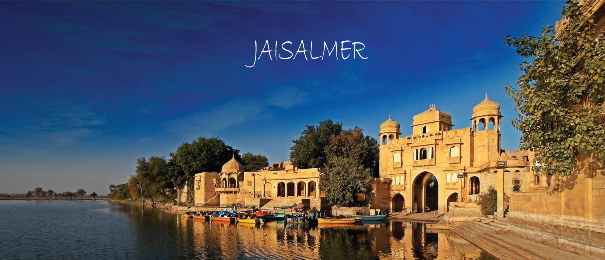
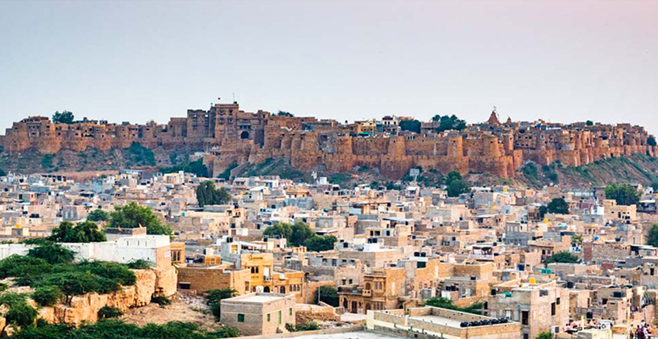
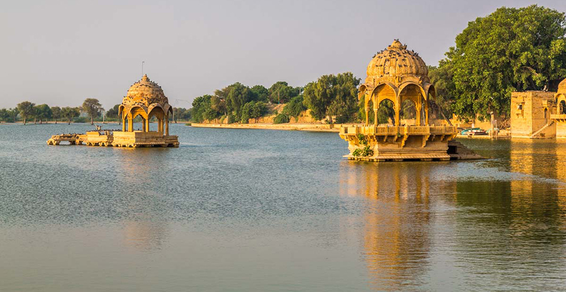
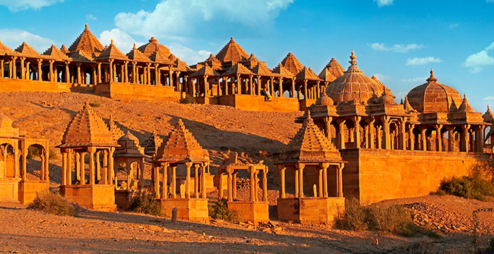

JAISALMER
WHERE THE FORTS ARE STILL ALIVE
If geology interests you, then Jaisalmer is where you need to journey. The Wood Fossil Park or Aakal is located about 15 kilometres away from the city. Here, one can discover and trace geologic tragedies that occurred in the Thar Desert 180 million years ago. The city of Jaisalmer also acts as the guard to western Rajasthan (and India’s) frontier. This 'Golden City’ is located close to the Pakistan border and in close proximity to the Thar Desert. The city’s most prominent landmark is the Jaisalmer Fort, also called Sonar Qila (Golden Fort). Unlike most other forts in India, Jaisalmer Fort is not just a tourist attraction. It houses shops, hotels and ancient havelis (homes) where generations continue to live.
Jaisalmer traces its inception to the 12th century. History tells us of Rawal Jaisal, the eldest heir of the Rawal of Deoraj, was passed over for the throne of Lodurva and a younger half-brother was crowned king. Rawal Jaisal went looking for a new location to set up his capital when he came across sage Eesul. The sage told him about Krishna’s prophecy which said that a descendant of his Yaduvanshi clan would found a new kingdom at this same spot. It was in 1156 that Rawal Jaisal constructed a mud fort, named it Jaisalmer after himself and declared it his capital.
ATTRACTIONS & PLACES TO VISIT AND EXPLORE IN JAISALMER

JAISALMER FORT
The Jaisalmer Fort also goes by the name Sonar Quila (Golden Fort) as it rises from the desert itself and seems to become one with the golden hues of the sand. The setting sun adds its own magic and shrouds the fort with mystique. The fort is constructed in the classic style of the royals by local craftsmen. This fortis good

GADISAR LAKE
Gadisar Lake was constructed in the 14th century by Maharawal Gadsi Singh to meet the water needs of his arid lands. Considering its importance, many small temples and shrines were constructed around it, transforming it into a pilgrimage centre and a tourist attraction.

BADA BAGH
About 6 kilometres to the north of Jaisalmer lies Bada Bagh, also called Barabagh (literally Big Garden). This garden complex houses chhatris or royal cenotaphs of the Maharajas of Jaisalmer state, including that of Jai Singh II. The location of the garden is such that it offers wonderful sunset vistas to tourists.

DESERT NATIONAL PARK
The Desert National Park displays the best of the Thar desert’s ecosystem and its varied wildlife. The Park is formed of undulating sand dunes, jagged rocks, dense salt lake bottoms and inter-medial areas. Various species of animals such as black buck,